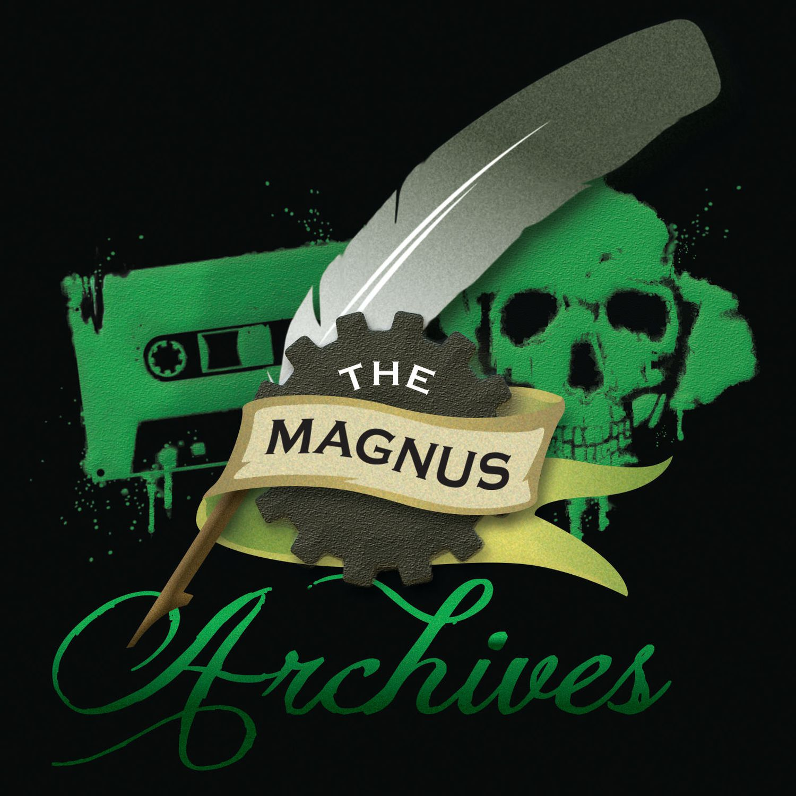

Korte Beschrijving
"Laat je mening horen, zie je angst onder ogen." De Magnus Archives is een wekelijkse horror-audiodramapodcast die onderzoekt wat er schuilgaat in de archieven van het Magnus Institute, een organisatie die zich toelegt op onderzoek naar het esoterische en het vreemde. Ga mee met Jonathan Sims terwijl hij het archief verkent, maar wees gewaarschuwd: als hij de diepte in duikt, begint er iets terug te kijken...
€12,99